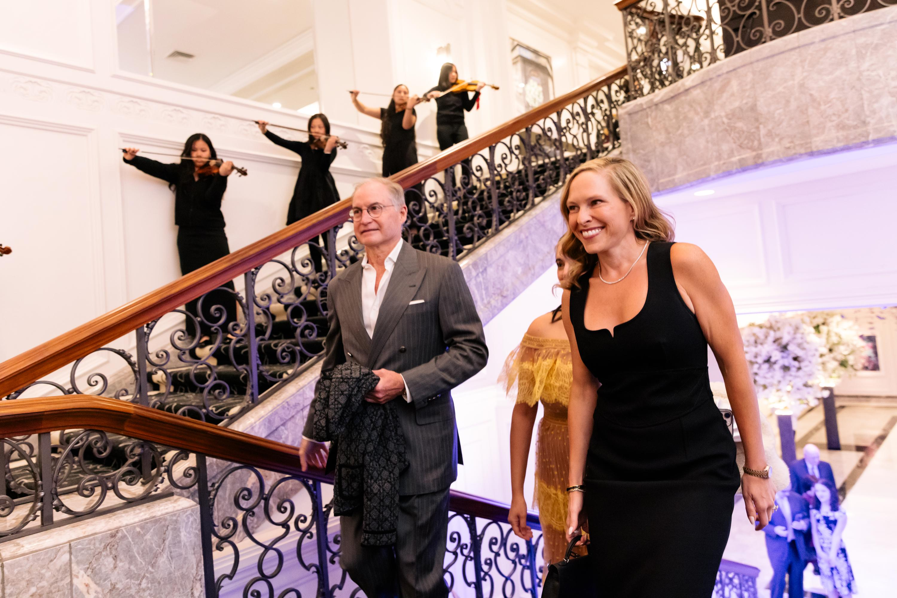
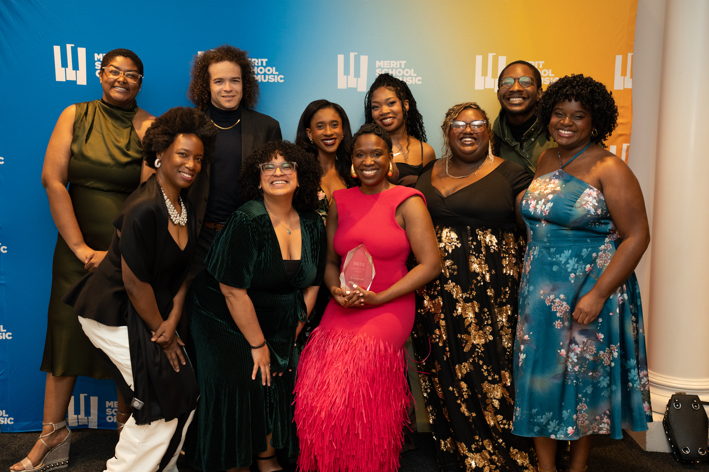
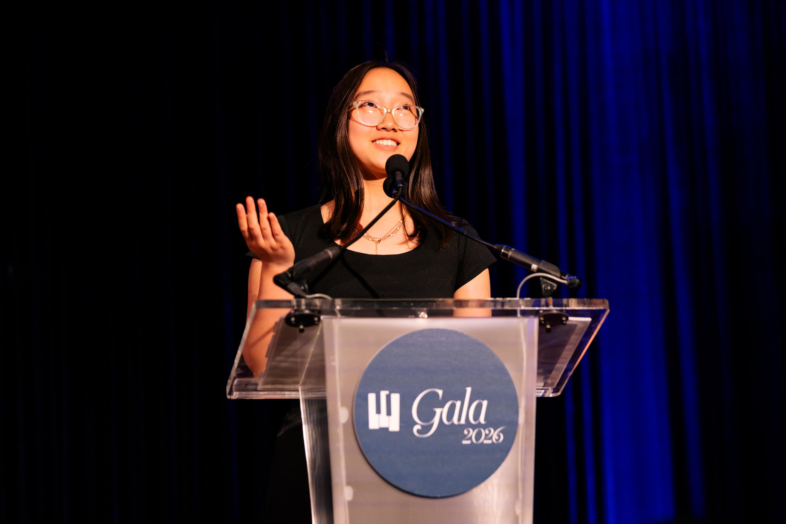
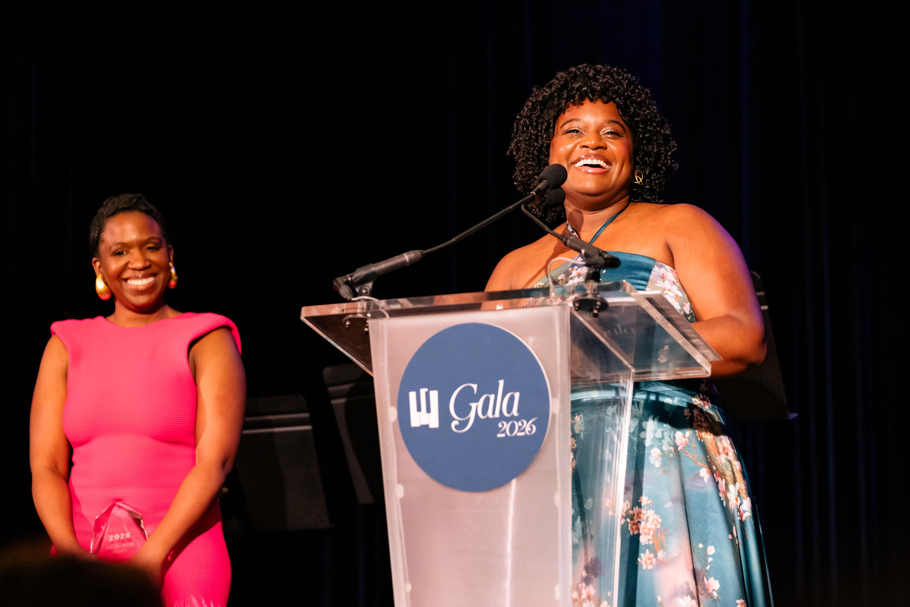
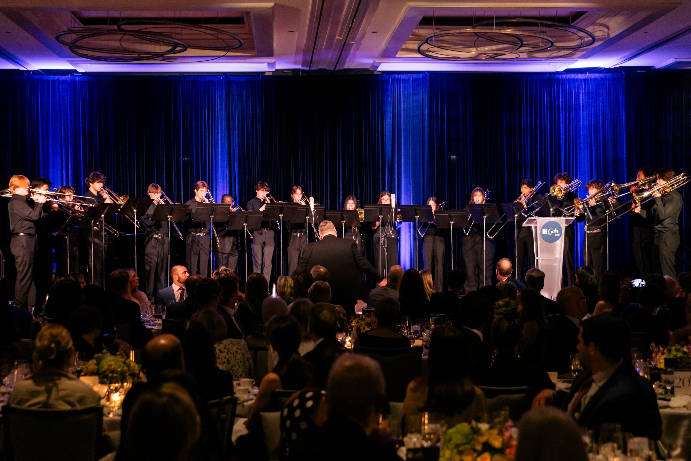

Merit Gala: Showcasing Student Success

“Merit’s Gala is our annual opportunity to showcase our students’ success and celebrate our founders’ belief in the power of music to transform the lives of young people and the need to provide equitable, ongoing access to that power. We are grateful for the tremendous show of support from our community – making this year’s gala our best fundraising effort to date – and for the opportunity to honor Caroline and Charlie Huebner and D-Composed.” — Charlie Grode, President and Executive Director, Merit School of Music.

Honorees Caroline and Charlie Huebner, arts and childhood development advocates, received the Alice S. Pfaelzer Award for Distinguished Service to the Arts at the recent Merit School of Music gala from a very special person. Daughter Julia Huebner presented the award to her parents noting that Sunday night suppers always focused on community service and an accompanying video featured son George and colleagues in the arts sharing more of their hands-on service and philanthropy. The final surprise: Merit faculty and staff sang a personalized rendition of Neil Diamond’s “Sweet Caroline,” noting their accomplishments.
The music of the night was magical for the 370 guests at the Four Seasons Chicago, making it hard to remember a gala so united in spirit. At the end, $1.6 million was raised.

D-Composed, a Chicago-based Black chamber music collective which celebrates culture and creativity by focusing exclusively on the works of Black composers and artists, received Merit’s Citizen Artist Award for not only exceptional performances but also community engagement and educational activities.

Emika Matsumura, Gala Student Speaker, a percussionist and Whitney Young High School Junior, told how it all begins for its students:
“Merit is a place of so many firsts. First concerts and competitions, first times playing new instruments. But even though we’ll all graduate eventually, Merit is not where I – or anyone, hopefully – will stop. I will keep finding opportunities to compete and to play; I will keep making friends with peers and faculty, finding myself through the people and the music. Merit, with all of its resources, has been the perfect place for me to grow into a more confident, collected, and connected musician and person.”

Eloquent emcee and trustee Dr. Derrick Gay told the audience:
“As a Merit alumnus, and global belonging and intercultural strategist, I know firsthand that Merit’s impact extends far beyond music-making. Serving as emcee for this year’s Gala is a full circle opportunity to celebrate a mission that expands access, cultivates excellence, and prepares young people to lead choice-filled lives.”
A trombone choir, groups with great names such as The Bone Rangers, Guitarnivore and Sticks & Stones, honors jazz combos, piano and strings performed—all Merit students who attend the Conservatory, an audition-based, tuition-free program that supports talented and motivated students from 140 zip codes across Chicagoland. Its primary goal is to help young people transform their lives and experience personal growth through music by providing access to participation. Begun 45 years ago, it engages over 3,000 students annually at three downtown branches and at area schools and community centers, and 100 percent of Conservatory graduates go on to college.
As its most important fundraising event of the year, the Gala helps fund $3.4 million in direct student support for the tuition-free Conservatory, free programming in schools throughout Chicago, and $750,000 in need-based financial aid for onsite lessons and classes: 82 percent of Merit students study at little to no cost.
Gala co-chairs were Thomas P. Danis, Jr., Thomas Linguanti, and Olivia Tyrrell. Julie Baumeister chairs the Board of Trustees and Charlie Grode is President and Executive Director.

Photos by Kyle Flubacker and Michelle Reid.
For more Merit information visit: meritmusic.org/gala.
About the Author: Judy Carmack Bross →